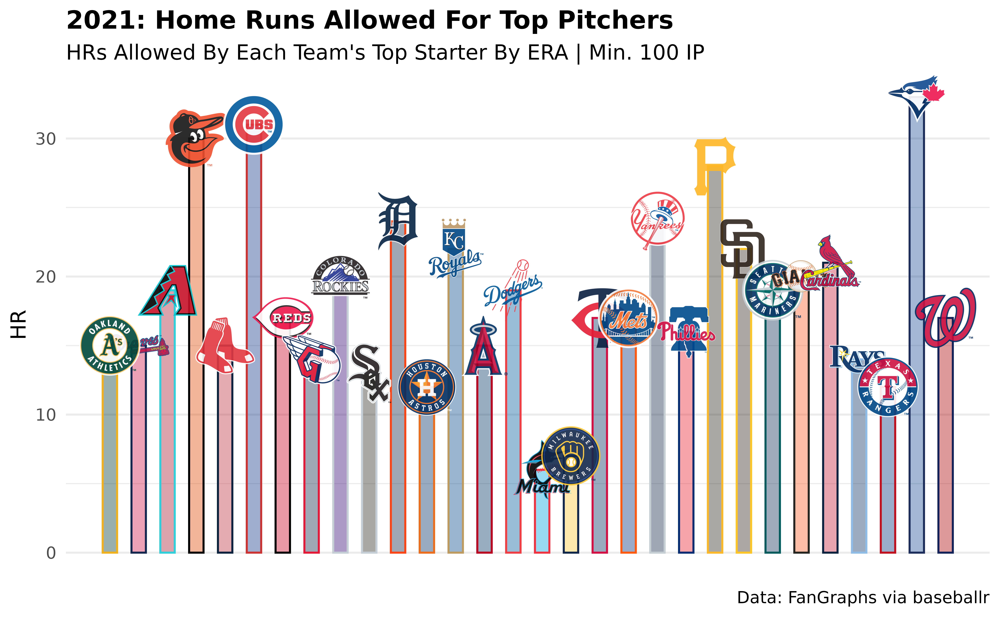
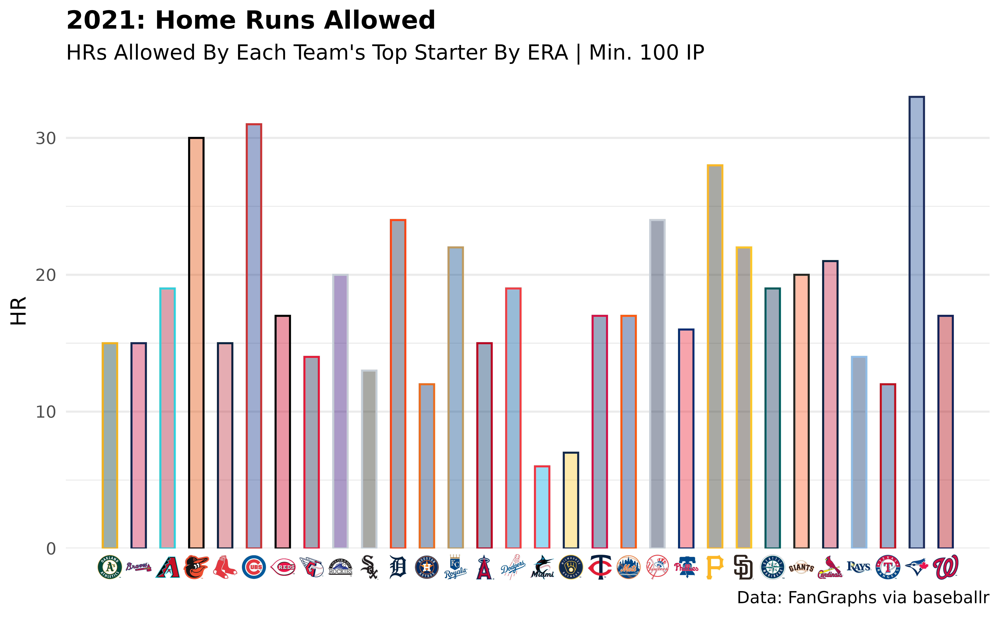

Installation
The easiest way to get mlbplotR is to install it from CRAN with:
install.packages("mlbplotR")To get a bug fix or use a feature from the development version, you can install the development version from GitHub with:
# install.packages("devtools")
devtools::install_github("camdenk/mlbplotR")Examples
Let’s plot every team on a grid with some extra customization:
library(mlbplotR)
library(ggplot2)
library(dplyr)
teams_colors_logos <- mlbplotR::load_mlb_teams() |>
dplyr::filter(!team_abbr %in% c("AL", "NL", "MLB")) |>
dplyr::mutate(
a = rep(1:6, 5),
b = sort(rep(1:5, 6), decreasing = TRUE),
# Keep alpha == 1 for teams that have an "A"
alpha = ifelse(grepl("A", team_abbr), 1, 0.75),
# Set teams that have an "E" to black & white
color = ifelse(grepl("E", team_abbr), "b/w", NA)
)
ggplot2::ggplot(teams_colors_logos, aes(x = a, y = b)) +
mlbplotR::geom_mlb_logos(aes(team_abbr = team_abbr,
color = color, alpha = alpha),
width = 0.075) +
ggplot2::geom_label(aes(label = team_abbr), nudge_y = -0.35, alpha = 0.5) +
ggplot2::scale_color_identity() +
ggplot2::scale_alpha_identity() +
ggplot2::theme_void() 
This is a basic example with FanGraphs data (pulled using baseballr) which compares ERA to FIP for each team’s top starting pitcher by ERA:
# Uncomment this to pull data, currently commented out to save
# a dependency on baseballr
#
# library(baseballr)
#
# df <- baseballr::fg_pitcher_leaders(x = 2021, y = 2021,
# q = 100, pitcher_type = "sta")
#
# filtered_df <- df |>
# dplyr::filter(Team != "- - -") |>
# # FanGraphs Team abbreviations aren't the standard
# # for what's used in the plotting functions so
# # you could clean them with the following line,
# # but the geom_*_logos() functions should all
# # clean the abbreviations before plotting
# #
# # dplyr::mutate(Team = clean_team_abbrs(Team)) |>
# dplyr::group_by(Team) |>
# dplyr::slice_min(ERA, n = 1) |>
# dplyr::ungroup()
library(scales)
filtered_df |>
ggplot2::ggplot(aes(x = ERA, y = FIP)) +
mlbplotR::geom_mlb_logos(aes(team_abbr = Team), width = 0.075, alpha = 0.7) +
ggplot2::labs(title = "2021: ERA vs. FIP",
subtitle = "Each Team's Top Starter By ERA | Min. 100 IP",
caption = "Data: FanGraphs via baseballr") +
ggplot2::theme_minimal() +
ggplot2::theme(plot.title = ggplot2::element_text(face = "bold")) +
ggplot2::scale_x_reverse(breaks = scales::pretty_breaks(),
labels = scales::number_format(accuracy = 0.01),
expand = c(.1, .1)) +
ggplot2::scale_y_reverse(breaks = scales::pretty_breaks(),
labels = scales::number_format(accuracy = 0.01),
expand = c(.1, .1))Here’s another that looks at Home Runs Allowed by top pitchers:
filtered_df |>
# The scale_*_mlb() functions don't auto-clean abbreviations
dplyr::mutate(Team = clean_team_abbrs(Team)) |>
ggplot2::ggplot(aes(x = Team, y = HR)) +
ggplot2::geom_col(aes(color = Team, fill = Team), width = 0.5) +
mlbplotR::geom_mlb_logos(aes(team_abbr = Team), width = 0.07, alpha = 0.9) +
mlbplotR::scale_color_mlb(type = "secondary") +
mlbplotR::scale_fill_mlb(alpha = 0.4) +
ggplot2::labs(title = "2021: Home Runs Allowed For Top Pitchers",
subtitle = "HRs Allowed By Each Team's Top Starter By ERA | Min. 100 IP",
caption = "Data: FanGraphs via baseballr") +
ggplot2::theme_minimal() +
ggplot2::theme(plot.title = ggplot2::element_text(face = "bold"),
axis.title.x = ggplot2::element_blank(),
axis.text.x = ggplot2::element_blank(),
panel.grid.major.x = element_blank()) +
ggplot2::scale_x_discrete(expand = c(0.05, 0.075))
Instead of putting the logos in the plot, we can have them be the axis labels:
filtered_df |>
# The scale_*_mlb() functions don't auto-clean abbreviations
dplyr::mutate(Team = clean_team_abbrs(Team)) |>
ggplot2::ggplot(aes(x = Team, y = HR)) +
ggplot2::geom_col(aes(color = Team, fill = Team), width = 0.5) +
#mlbplotR::geom_mlb_logos(aes(team_abbr = Team), width = 0.07, alpha = 0.9) +
mlbplotR::scale_color_mlb(type = "secondary") +
mlbplotR::scale_fill_mlb(alpha = 0.4) +
ggplot2::labs(title = "2021: Home Runs Allowed",
subtitle = "HRs Allowed By Each Team's Top Starter By ERA | Min. 100 IP",
caption = "Data: FanGraphs via baseballr") +
ggplot2::theme_minimal() +
ggplot2::theme(plot.title = ggplot2::element_text(face = "bold"),
axis.title.x = ggplot2::element_blank(),
panel.grid.major.x = ggplot2::element_blank(),
# this line triggers the replacement of team abbreviations with logos
axis.text.x = mlbplotR::element_mlb_logo()) +
ggplot2::scale_x_discrete(expand = c(0.05, 0.075)) +
ggplot2::scale_y_continuous(expand = c(0, 0, 0.05, 0))
The family of element_*() functions allows for a lot of
extra customization with axes labels and can even be used for
facet_wrap()/facet_grid() strip headers.
Lastly, here’s an example using headshots:
# top_12 <- df |>
# dplyr::mutate(playerid = as.double(playerid)) |>
# dplyr::slice_min(ERA, n = 12)
top_12 |>
dplyr::left_join(mlbplotR::load_headshots(),
by = c("playerid" = "fangraphs_id")) |>
ggplot(aes(x = ERA, y = FIP)) +
mlbplotR::geom_mlb_headshots(aes(player_id = savant_id), height = 0.15) +
ggplot2::scale_x_reverse(breaks = scales::pretty_breaks(),
labels = scales::number_format(accuracy = 0.01),
expand = c(.1, .1)) +
ggplot2::scale_y_reverse(breaks = scales::pretty_breaks(),
labels = scales::number_format(accuracy = 0.01),
expand = c(.1, .1)) +
ggplot2::labs(title = "2021 SP ERA Leaders",
subtitle = "Minimum 100 IP",
caption = "Data: FanGraphs via baseballr") +
ggplot2::theme_minimal() +
ggplot2::theme(plot.title = ggplot2::element_text(face = "bold"))
Note: If a player’s headshot data can’t be found, their headshot will be replaced with the MLB logo by default.